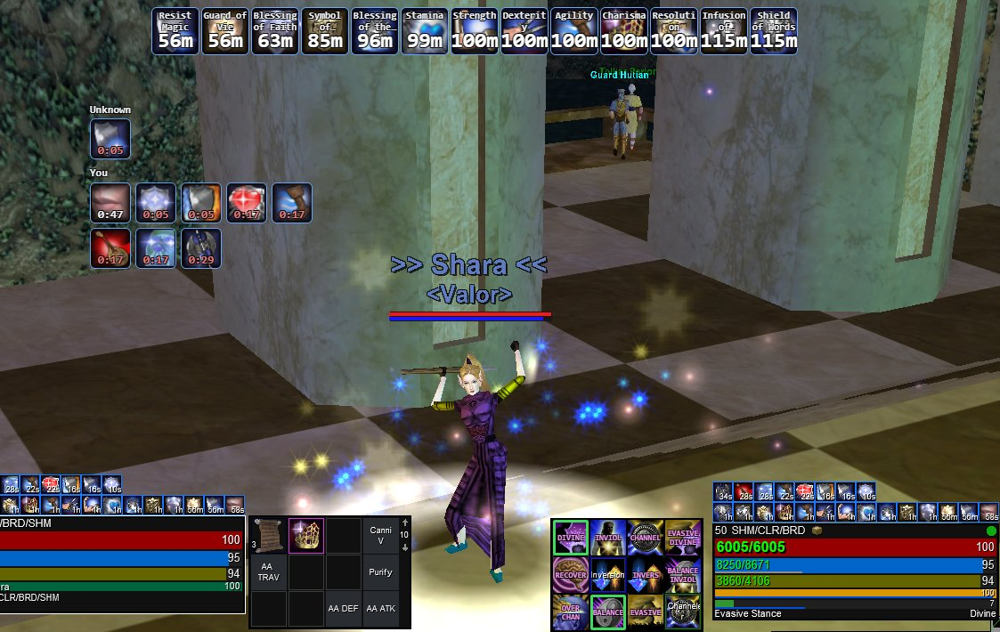
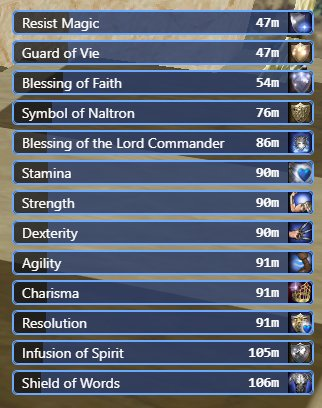
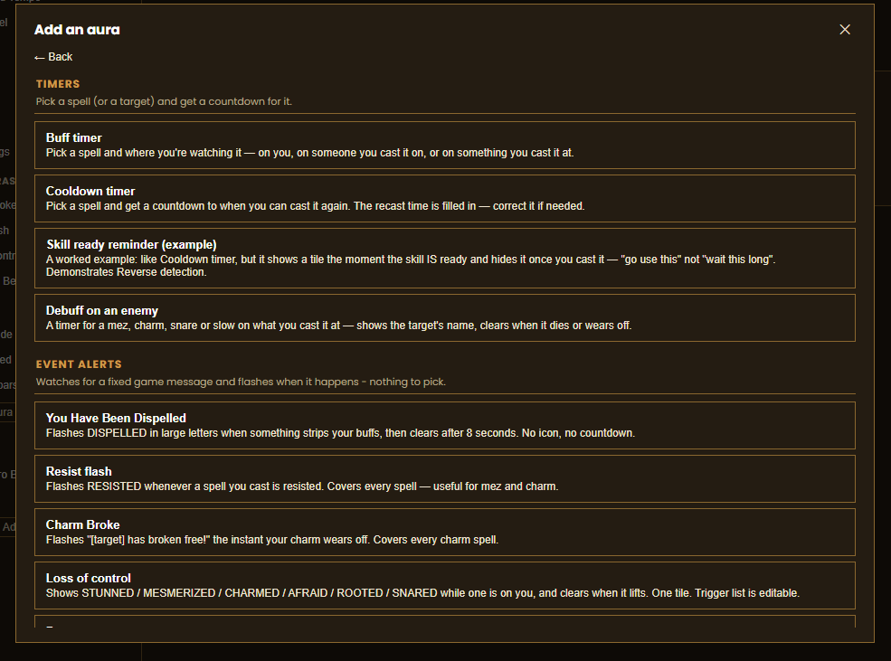
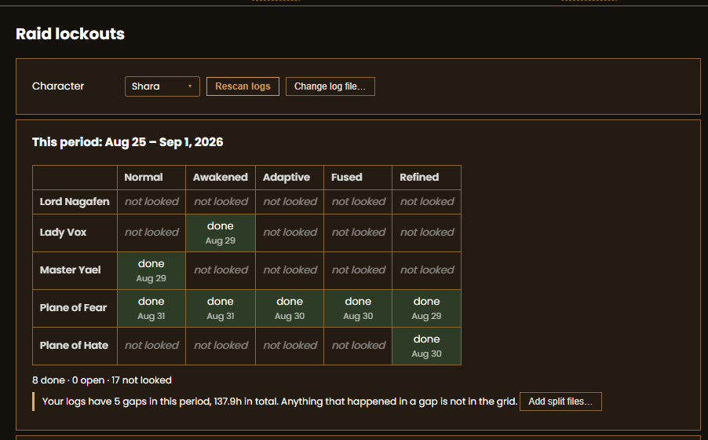
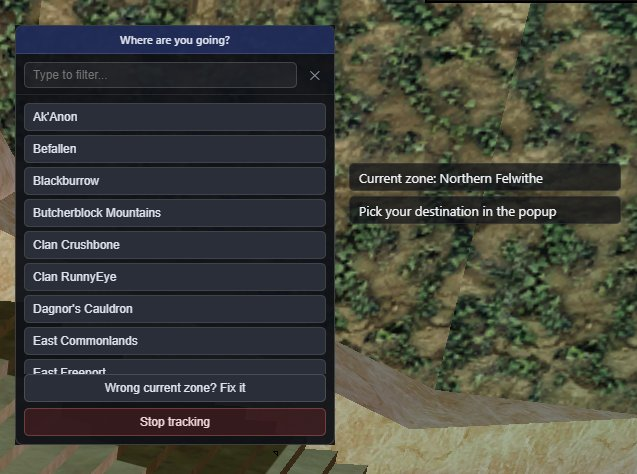
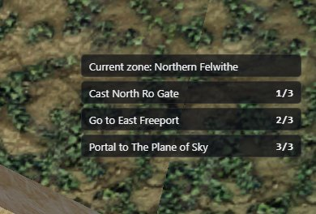
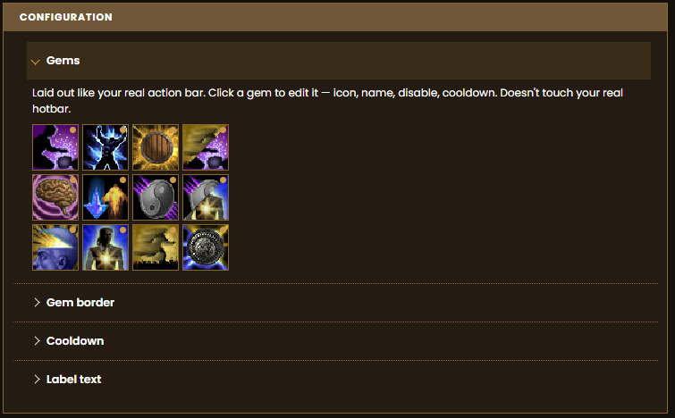

EQL Source / EQLS Auras
EQLS Auras
A countdown timer for every buff you’re running, right on top of the game. Read straight from your EverQuest Legends log.
Windows.
Download EQLS Auras
EQLS Auras watches your log while you play and puts a click-through overlay on screen with a timer for every buff you’re running. Build as many overlays as you want, put them where you want, give them sounds. Point an aura at any line in your log, not just buffs the app knows. It hides when you tab out of EQ and comes back when you tab in. It tracks your weekly raid lockouts, which EQ never prints.
It reads files the client already has: the log it writes as you play, your spellbook, and the game’s own spell icons. It does not read or alter the game’s memory, inject code into it, or send it input. It fetches its typeface from Google each time it launches, which discloses your IP address to Google; beyond that it sends nothing — no telemetry, no analytics, no update check. That fetch is the main window only: the overlay drawn over the game requests nothing at all.
The idea is WeakAuras’. The code is not: a from-scratch implementation for EverQuest Legends, sharing no code and no trigger format with it, and neither affiliated with nor endorsed by its authors.
Buff tracking
Every buff you’re running, counting down, on top of the game. Read straight from your live log.
Overlays
As many auras as you want, each its own window. Position, size, opacity, colours and text, set per aura and remembered.
Icon grid or list. Switch any aura between the two.
Stays out of the way. Click-through, so it never eats a click. Hides when EQ isn’t the focused window, comes straight back when it is.

Group buffs
See what you’ve cast on your group. Shows what’s landed on each groupmate, by name.
Custom and premade auras
Premades for the common stuff. Buff timers, cooldown timers, resist flashes, “you got dispelled,” “your charm broke.” Drop them in, done.
A cooldown timer that tracks the buff first. One tile counts the buff down, then rolls straight into “ready in X” with no reset.
Trigger an aura off any log line. Cast lines, zone in and out, or any text you type.
Combine triggers, or flip them. AND/OR several triggers on one aura. Or invert an aura so it shows what hasn’t happened yet — “this is ready, go use it.”
Text-only auras. A fixed label the moment a trigger fires, no timer.
Share an aura with a code. Copy the config to a short code, a friend pastes it in and has the same aura.

Sound and alerts
Separate sounds for landed, expiring and expired. Per aura.
Use your own sound files. Any audio file on your PC. Starter sounds ship with the app.
Raid lockouts
Know when your lockouts reset. EQ never prints a lockout line, so the app reads the weekly-task messages it does print on a kill and tracks each lockout from those.

Travel
Zone-by-zone routes. Pick where you’re going, get the route across 100+ zones and the travel spell for each step.


Action bars
Skin your hotbar. Overlay tiles that sit on your real action bar buttons — game spell icons, hybrid icons that combine two, or plain frames. Per profile. Doesn’t touch the real bar.

Quality of life
Trade pings. A sound the moment someone opens a trade with you.
Log files kept tidy. Splits your log per day and per session, archives at each raid reset, plus a manual archive-and-truncate. Your raw log folder stops growing forever.
Fix the spell data by hand. Browse every spell the app knows, correct a wrong one, or add your own. Your fix sticks through updates.
Move your setup to another PC. Export every aura, profile, sound and setting to a folder, import it on the other machine. Offline.
Installing
- Download the installer.
- Run it.
- Windows SmartScreen will warn about an unknown publisher. Click **More info**, then **Run anyway**.
- Open EQLS Auras. It finds your EverQuest install on its own — nothing to point it at.
Windows only. Free.